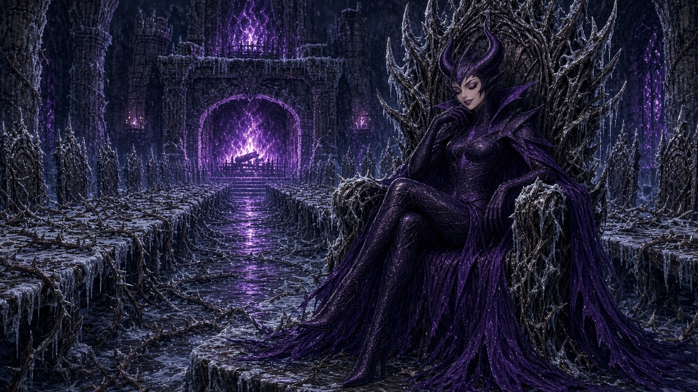

The water closed over him without a sound.
That wasn’t right. Wren had been dunked before, shoved off the pier by the clique or jumping in when he was younger with his parents. The ocean always made noise. There was the almost painful slap when he hit it, the roar as he went through, then the soft drink fizz and burble of bubbles racing up past his face muffled by the ever-present sound of simple pressure against the ear.
This water wasn’t like that. It didn’t say anything as he went in. It just took him.
It was thick. It was black. It tasted like copper, like ozone, like cleaner, like nothing at all.
He opened his eyes. Some part of his brain was panicking but it was a long way away. Some part of his brain was thinking, and it said, If we’re going to die anyways, who cares if we have some dirty water in our eyes? Strangely he could see through the water a little, though it looked as black as pitch from outside. Above him, a long way up and getting longer, the roof was a hard line of light. Rain stippled the surface. And over the edge of the wall, small and pale and reaching, there was a hand.
Nikko’s arm was still stretched down towards the dark. He hadn’t pulled it back. He’s going to stay like that, Wren thought. Nikko was going to hang over that wall with his hand open until the water came up and took him too, because that was Nikko. That was Nikko and the problem with Nikko.
Wren’s legs still worked. His ankle was a white coal in the black, but he knew his own strength. The surface was right there. One kick or two. That’s all it would take. He could reach that hand, stretched out to save him.
He didn’t kick.
He sank into the black and watched that hope get smaller and darker. The panicking part of himself hushed like it had been struck. The thinking part had a thought, a warm thought like a slice of fresh pizza: If I’d held on, he’d have come over too. Both of us. I let go so he could live.
It was a good thought. He pulled it in close and it sat in his chest like it had always been there. The panicking part of him stopped panicking. It didn’t calm down. It went numb and quiet. He held onto the thought, since he wasn’t holding on to anything else, and ignored that numbness.
Something underneath him took hold of his ankle. The bad one. It pulled.
The last of the light went away.
He woke up primarily because he was cold. Achingly, painfully cold. It was new and alarming. He had never been cold before in his entire life.
He was on his back on frigid stone. The stone had recently been wet, but the wet had frozen in a thin skin that crackled when he moved. His breath went up in front of his face and hung there like it was huddling next to him for warmth. Above that cloud of breath, very far above, was a little gray coin of light. Between him and the coin, the walls of whatever he was lying in went up and up, round and close, and every inch of them was thorns.
Not bushes, not vines. Thorns. Black and long as fingers, crusted white with frost, growing out of the mortar between the stones in tangles so thick he could barely see the stones behind them. They seemed like they grew toward the light out of tradition but had forgotten why.
Wren sat up. His ribs voiced opinions. His ankle had louder ones. His right hand was cramped shut around something.
He had to look directly at his hand to force the fingers open. Half a skateboard, the truck frosted to his hand. The old crack ran down the middle like a mouth and ended where the board ended, in splinters. Jake’s stickers were still on it. Some kid’s clothing brand. A cartoon cat with x’s for eyes. Dead things, now.
He’d held on to his board. All the way down, through all that black water, he’d held on to his board.
He looked at it for a long time. Far away, wind moved, but it was dead still here while he stared. He set the destroyed board down on the stone very carefully, like it belonged to someone else and forced his hand and eyes to break his grip on it. He tried not to think about holding onto things anymore. Thinking about it was a way of losing.
“Okay,” he said. His voice went up the shaft and didn’t come back. “Okay.”
He forced himself to check his body. His coach used to make him check himself after a bad slam. He never liked it because it felt like admitting the possibility of failure, but he’d learned it was better to know your weaknesses. You can’t hide what you don’t know.
Fingers, wrists, elbows. Teeth. All there, mostly complaining, extremely cold, even his teeth, which worried him mildly. Neck, slow. Ribs: bruised, not broken, probably. Knees. The ankle he didn’t check, because he knew. It was fat and hot inside his shoe, and every time his heart beat it angrily reminded him it was there.
His phone was gone. His coat and shirt were all soaked through and stiffening with frost. His jeans were black to the thigh with something that wasn’t water and wasn’t drying.
He stood carefully, gritting his teeth and breathing slowly, hiding the pain from nobody in case they were watching. He felt parts of himself going numb, from cold probably. Totally normal and nothing to worry about. Across the long curving space he sat in, set into the thorns, he could see a door. It was small and made of rusted iron. It had no handle that he could see.
He went to it anyway. There was nothing else to do, nowhere else to go. He put his palm flat on it. It was so cold it stung even through the numb. He pushed. It opened.
The corridor beyond was dark but for strange, cold blue orbs. They were glass globes hung on chains, each one holding something small and pale beating its wings slowly against the glass. The light pulsed with the wings. Wren decided not to look at them too closely.
The corridor smelled like iron and wet leaves and something he couldn’t place under that. Something old and sweet that made the back of his throat itch. The floor sloped up. Good. Up was the only direction that had ever made sense.
He made it about forty steps down the hallway on the bad ankle before he heard the singing.
It echoed in from a side passage, a narrow slot in the wall with bars across it. The voice was feminine, low and clear. Whoever it was, they were singing without words, just a line that went up and down again like a hand smoothing a sheet. It stopped when his foot scraped the stone.
“Hello?” the voice said. “Is someone there? Please.”
I should keep walking. He knew it like he knew a bad ramp before he dropped in. He did what he always did and dropped in anyways.
She was sitting on the floor of a cell no bigger than his closet back home, with her knees pulled up and her arms around them. Her hair was black, really black like his, the kind that has blue in it when the light hits. It was long and loose and tangled with little bits of frost. She wore a plain gray dress that had maybe even been nice once. Her feet were bare. Her face, when she lifted it, was pale and sharp and very young, and her eyes were dark and wet and found him immediately.
“Oh,” she said. “Oh, you’re real. You’re not one of them.”
“One of who?”
She looked past him down the corridor, and her shoulders came up around her ears. “Them. You’ll hear them before you see them. They like to watch.” She swallowed. “Please. Are you hurt? You’re limping.”
“I’m fine.”
She looked at his ankle. She looked at his face. Something in her own face softened, like she’d seen through him and decided to be kind about it. “Of course you are,” she said.
He crouched down by the bars. It put his weight on the good leg but made his eyes water anyway. Up close, he could feel cold coming off the cell like the open door of a freezer. He stared at her bare feet with a pang of sympathy. His own shoes were practically ice blocks.
“How do I get out of here?” he said.
“Up.” She almost smiled. “Everything here goes up or down. Down is worse.” She reached through the bars, and her fingertips brushed the back of his hand. They were so cold they burned. “I can tell you the way. But you won’t get out alone. The gate at the top of the stair is locked, and only the jailer has the keys.”
“So I get the keys.”
“He sleeps in his quarters, three landings up, past the long hall where they eat. He keeps the keys on a ring on a hook over his bed. He never takes them off the hook, because he’s lazy, and he hardly ever wakes, because he’s drunk.” Her fingers tightened very slightly, very painfully on his. “If you could bring them to me. If you could open this door. I know every way out there is. I’d take you in.”
Take me in. Like home. There was no home anymore. There was only a black ocean and a roof with a boy on it. God, he hoped there was still a roof with a boy on it.
Stop thinking about it. Thinking is losing.
“Why don’t they just let you out?” he said.
“Nobody here would dare.” She looked down at their hands. “So I wait, and I see who comes.”
Wren looked at her hand on his. Small and white, with a thin dark line between the knuckles where the frost had cracked the skin. It hurt him to have her hand there, but that small hand forced the part of him that had panicked in the water to come back to life, just a little. He remembered a girl in an orange jacket sitting on a platform in the dark with her knees pulled up exactly like this girl had been. He remembered that she had texted him, waited for him. And in his mind, he watched the phone buzz itself across the coffee table again.
If I don’t try, that’s also losing.
“Three landings,” he said. “Past the hall.”
“Past the hall.” Her eyes were enormous. “You’ll come back?”
“I’ll come back.”
He said it like a promise. He heard himself say it like a promise. Something cold and pleased moved through the back of the cell, a draft, maybe, from somewhere he couldn’t see.
“What’s your name?” she asked.
He almost told her. His mouth was already open around it. Then he remembered his mother’s hand on the back of his neck at the shrine when he was small, and her voice low in his ear: Not to everyone. Your name is for the ones who earn it.
“Wren,” he said. Only that.
She smiled at him. It was a good smile, but it didn’t go all the way up.
“Good luck, Wren,” she said.
She was right. He heard them before he saw them.
It started as a sound like rowdy schoolkids at the far end of a play yard: chattering, shrieking, somebody laughing too high and too long. The noise came down the corridor from the light ahead and bounced off the thorns. As he got closer it broke apart into voices. Not words, exactly. Some of them were almost words. Some of them were words in the wrong order. One of them, very clearly, said “I’m fine,” in a voice exactly like his own, and then cackled.
Wren stopped. The hair stood up on his bare arms.
He backed into the thorns.
It hurt. They went right through the cloth and into his shoulders, his back, the back of his neck. He bit down on the inside of his cheek until he tasted pennies and held still, and the first of them came around the corner.
It was about as tall as his waist and shaped like a sack of rocks somebody had given legs. Its skin was the gray-green of old pond ice. It wore a cooking pot for a helmet, with a hole punched for one ear, and carried a spear made of a broom handle with a carving knife lashed to the end with what looked like hair. Its nose was long and white and dripped.
The second was tall and thin as a coat rack, with arms that hung past its knees and fingers that snapped and clicked like a nervous tic. Its armor was all made of teacups, dozens of them, chipped and mismatched, strung together on wire so they rattled when it moved.
The third had no neck at all, its head and ears popping out directly from its shoulder. The fourth had one head but too many chins and necks.
They kept coming. Every one of them was different. One had antlers wrapped in ribbon. One walked on its hands. One wore a little girl’s lace collar and nothing else and carried a club studded with doorknobs. They were all ugly in exactly their own way, as if whoever made them had never once made the same mistake twice. Their eyes caught the blue lantern light and threw it back, green, gold, milk-white, and they crowded the corridor shoulder to shoulder, jostling, pinching each other, snatching at each other’s things.
Wren had seen crowds like that. He’d seen them every day of his life at the edge of the bowl. Crowds that came to watch somebody fall.
They went past him. The one in the teacup armor stopped right in front of the patch of thorns where he was hiding and sniffed. Its nose went up and down. Its fingers clicked. Wren’s lungs started to burn. A thorn was in the skin under his ear, and he could feel his own pulse beating against it.
The goblin in the cooking pot shoved the teacup one from behind and they both went down in a clatter, and by the time they’d finished screaming at each other they’d forgotten what they’d stopped for. The crowd flowed on down the corridor toward the cells.
Wren waited until he couldn’t hear them. Then he waited longer. Then he finally peeled himself, painfully, out of the thorns, one hook at a time, and kept going up.
The first landing was easy. He went up the stair on his hands and his good foot, slow, and nobody saw. There was a door on it, but he ignored that.
The second landing was not.
The stair came out onto a ledge that ran around the inside of a huge round room, and the room was full of goblins. Not a crowd this time. A herd. They were asleep, mostly, piled on each other in drifts like dirty laundry in his friends’ rooms, snoring in a hundred different keys. The floor between them was a carpet of bones and bottles and broken things. He could see the door he had ignored before below him. It had three goblins snoozing against it, all with little bells attached to their armor or worn as hats.
Good thing he could remember instructions.
The ledge ran all the way around the wall to a stair on the far side with a few interruptions. It was about as wide as a curb. That was good. He knew curbs. He’d done curbs his whole life.
He went along it with his back to the wall and his toes hanging over nothing. When the ledge was broken he stepped across the gap, and when the ledge was gone entirely he leaned out and caught the edge of an old beam running partway across the room and scrambled on top of it. Then he slid along the rough surface on his chest like it was a rail. When that ended, the ledge had picked up again, so he carefully lowered himself and swung his feet back towards it. His bad ankle caught on the ledge wrong and the whole leg went white and then black and his hand nearly slipped. He hung there stretched between the ledge and beam, looking down at a goblin that looked nine tenths belly and the rest elbows and tried hard not to sweat or swear.
His fingers held. His fingers had always held when he needed them to. He was not going to think about how that was true.
Below him, the elbows rolled over in their sleep and said, in a voice like an old woman’s, “Did you hear that? Did you hear that?”
Something else said “Shut up,” in a voice like a man’s.
Wren pushed himself back to standing on the ledge and leaned against the wall with the back of his head on the frozen stone, breathing through his nose. When he could, he went on.
The long hall was where they ate.
He smelled it before he saw it, that old sweet smell from before but stronger now, mixed with smoke and grease and the heavy, rotten-honey stink of something fermenting in barrels. Light flickered orange through a high archway at the top of the stair. Music came with it, if music could be made by banging pots on a table and screaming.
He stayed in the shadow of the hall and looked through the archway.
The hall was long and low and roofed in thorns, and down the middle of it ran a table built out of doors. Old doors, laid flat end to end on trestles, every one a different color, some with knockers still on them, some with numbers. The goblins sat on both sides on anything that would hold them. They ate with their hands and with knives and with each other’s hands. Some of them were gambling. He could see coins changing hands, and teeth, and once, something that wriggled. At the far end, where a fire burned in a fireplace big enough to drive a car into, a chair stood at the head of the table. It was woven from black thorns and very tall. Nobody was sitting in it. Nobody was even sitting near it.
On the other side of the hall, past the table and the fire and fifty pairs of eyes, he could see the next stair going up.
He looked at the hall the way he looked at a new park. Not at the crowd. At the lines.
The table was too crowded to go around. There was nothing that could hide him enough down there to guarantee he’d make it across the room, no matter how distracted the crowd was. But the roof was thorns, and the thorns grew in long woven ribs between beams. The beams ran the whole length of the hall. Above the firelight. In the smoke.
It hurt to climb. It hurt everywhere. He climbed anyway, up the corner of the archway where the thorns were thickest and oldest, and then past the archway until he pulled himself to the top of a beam with smoke stinging his eyes and the whole hall roaring underneath him.
He crawled hand over hand along the beam, thorns catching constantly. The smoke covered him. The noise covered him. A goblin with a face like a bulldog climbed onto the table to sing, and everyone threw things at it, and in the middle of the screaming Wren crossed the halfway point.
Then the beam ended.
There was a gap of about six feet to the next one, no room above him to stand or make a jump, and nothing to swing from but the woven ribs of thorns in between. The ribs looked strong. They also looked like they would tear his hands into ribbons.
Below him, the bulldog goblin fell off the table and the crowd howled.
Wren took his coat off. It was frozen stiff and stank. The beautiful purple was faded nearly to gray. He wrapped it twice around his right hand and once around his left, and he grabbed the thorns and swung his body out over the void.
The thorns went right through the cloth. Of course they did. He’d known they would. He swung anyway, and caught another patch of thorns, and swung again, and on the third swing he made it to the next beam and swung himself up to half sit on it. He jolted his bad foot and his whole body lit up white from the ankle to the teeth, and he didn’t scream. He carefully unclenched himself from the thorns and lay on the beam. He shook and with utmost care did not scream. Below him a goblin with three eyes looked up, squinted into the smoke, and looked back down at its plate.
He made it to the stair. He didn’t remember climbing down.
Halfway up the third stair, the air changed.
It got thick. Not like smoke. Like honey. Wren took a step and his foot came down slow, slower than it should have, as though the stone had moved a little farther away while he wasn’t watching. The blue lantern light stopped pulsing. A frost moth inside a globe hung in the middle of its own wingbeat, wings half up, and didn’t finish.
There was an alcove in the wall. Inside, the thorns had grown into a shape like a bed, or a cradle, or a cage. There was a man in those thorns.
He was young, or he had been young once. He had a wild beard and long hair gone the color of old rope. His clothes had been fine at some point, a coat with a high collar and buttons that might have been gold. Under the coat, across his chest, an old wound ran from shoulder to hip, healed into a long pale ridge. The thorns went around him and through his clothes and around his wrists, but none of them went into him, as if they had been told to hold him and not to hurt him.
His eyes were open.
They moved. So slowly that Wren had to stand there for what felt like a whole minute to be sure. They moved from the ceiling, down, toward the boy standing in the mouth of the alcove.
Wren backed away. Every step was a step through syrup, and then he was out, and the air let go of him all at once, and the frost moth behind him finished its wingbeat with a little click against the glass.
He didn’t look back. He didn’t have time to care. That was what he told himself, and he went up.
The jailer’s quarters were exactly where she’d said.
The door stood open a crack. Snoring came out of it in long wet rolls like storm surf. Wren put his eye to the gap.
The jailer was the biggest goblin he’d seen yet. It lay on a heap of furs and sacks that sagged in the middle under its weight. Its great belly rose and fell mostly rhythmically, catching occasionally on a snore and then starting up again in a new pattern. It had a face like a fist and tusks that curled up past its nose and a little embroidered nightcap perched on its enormous forehead. One arm hung off the bed with the knuckles on the floor. Empty bottles stood around the bed like candles around a shrine.
On a hook over the bed, there was a ring of keys.
It was iron, big as a dinner plate, and absolutely crowded with keys. Long ones and short ones, brass and black iron, one that looked carved out of bone. It hung from a hook driven into the thorns right above the jailer’s head, swaying a little every time the jailer snored.
Wren dissected the room, looking to pull victory from its guts.
The ring was out of reach from the floor. To get it he’d have to stand on the bed. The bed sagged in the middle where the jailer lay and rose up high at the edges, and the edge nearest the wall looked solid enough. Maybe. If he stepped right on the corner post. If his ankle held. If the keys didn’t ring when he lifted them off the hook.
Thinking about it was a way of losing. He dropped in.
He walked on the outsides of his feet so his sneakers wouldn’t squeak. He stepped over the arm. He put one foot on the corner post of the bed and felt it take his weight and creak. The jailer snorted. Wren stood frozen with one leg up like a heron. The jailer smacked its lips. Rolled half over. Settled.
He stepped up the rest of the way, balanced with as little weight on the bad ankle as he could manage. Reached. His fingers closed on the ring.
The keys were going to jingle. They all hung loose together on the iron, and the second he took the weight off the hook they would swing together and ring like a blasted bell. He knew it in his body like gravity.
So he didn’t lift it. He took what remained of his coat in his other hand and slowly gripped the keys while he held his weight against the ring and hook. It took a whole minute for him to finish grasping them all together in his cloth covered hand. Then all at once, he pulled his body straight and yanked the ring and keys off the hook and hopped off the bed frame. There was a louder creak. He landed on his good foot, slid his bad one out and crouched low. His bad foot bumped a bottle and it tilted and turned.
The goblin sat up. Wren couldn’t see him, but he heard the weight shift. There were ten seconds. The bottle turned and spun and tilted. It made a soft glass noise and bumped the edge of a stone in the floor. The ten seconds dragged into eternity.
Wren didn’t move. Didn’t breathe. He stared at the bottle and willed it not to fall over. He watched its shadow and begged for it to be sticky and hold the bottle in place. The bottle, it seemed, impossibly, slowed and then straightened. Above him, in the bed, the jailer said, very clearly, in a voice like a little girl’s, “Not now, Mama.”
He thumped back down into the bed and went back to snoring.
Wren walked out. He made it fifteen steps down the hall before his knees went out from under him, and he sat on the cold floor with a ring of stolen keys in his lap and laughed without making any sound at all, his whole chest shaking with it, tears running down his dirty cheeks. He didn’t know why he was laughing. He didn’t care.
He’d done it. Nobody had seen him do it. There wasn’t one single person in the whole world who had seen him do it, and he’d done it perfectly.
The thought almost felt good. Almost.
Going down was worse than going up. He was shaking from exhaustion and aching from the adrenaline now. On the bright side, the goblins in the long hall were drunker, and somebody had lost a bet, and three of them were fighting on top of the table. The beam was where he’d left it. The thorns were where he’d left them. His hands, when he unwrapped the coat in the dark of the stair, were striped red and black and wouldn’t close all the way. He wrapped them back up and kept going.
He went past the alcove with the slow air and didn’t look in. He went around the room of sleeping goblins on the curb-wide ledge. The bad ankle had stopped hurting, in a way he understood was very bad, but he very carefully didn’t think about it.
He didn’t hide in the thorns this time when the crowd from the corridor came back toward him. He climbed up the wall just past the doorway and went up into the thorns above the passage instead, hanging from the ceiling with his back pressed into the black and the keys pinned silent to his chest, and they went underneath him without ever looking up. Not one of them looked up. Nobody ever looked up that didn’t follow him there. He’d known that his whole life. Every crowd at the bowl watched the wall and never the air above it until he showed it to them.
He reached the cell with the girl in it. He felt delirious. Ignore that.
She was standing at the bars. She was heartbreakingly pretty. Ignore that. She was waiting for him. Her face was lit up like sun on snow.
“You came back,” she said.
“I said I would.” He was out of breath. His voice didn’t sound like his. He wiped sweat off his face. He was sweating. That was also probably bad. He held up the ring. “Which one?”
“It doesn’t matter.”
“What?”
He looked down at the lock. His head didn’t feel right. He looked at the girl, her pretty dark eyes and her smile that did not reach them. He looked down stupidly at the door.
He reached out with one bloody, shaking hand and put it flat on the bars. The door swung open on its own weight, easy, silent.
She stepped out.
Inside the cell she was a sweet girl excitedly escaping a terrible prison. As she stepped out, she changed. She was a noble lady stepping down from her carriage. Her chin up, one hand trailing, unhurried. She was no longer small and sweet and pretty. She was dark and smirking and unbearably beautiful.
The gray dress went black and long, pooling on the stones, spilling down the corridor like a shadow at sunset. Her black hair grew and lifted and formed into two tall black curving horns above her head. Frost spread out from her feet suddenly shod in shiny black boots across the floor in fern shapes. Worst of all, the thorns along the walls turned toward her. All of them. Every single one, all the way up the corridor, creaking, turning their points to her the way flowers turn toward the sun.
She was very tall now. She was beautiful in a way that made his teeth hurt. Her eyes were still dark, but they weren’t wet anymore, and the smile that hadn’t gone all the way up finally met her eyes, and it was cruel and kind all at once.
“Oh, well done,” she said. “Well done, oathbreaker.”
The word went into him like the ankle snapping on the coping. A bright white flower of it.
“I’m not—”
“Oh, you are.” She walked around him. Her dress whispered on the stone. Behind her, all along the corridor, the goblins were coming out of the dark. Not crowding now. Standing back against the walls, silent, every one of them, heads bowed. “In your shiny city, a boy with yellow hair begged you to hold his hand. You swore to him and the princess that you were friends.”
“I didn’t swear anything.”
Her smile thinned. For the first time there was an edge in her voice, and the frost at her feet crept an inch closer to his. “So they all say. And yet here they all arrive.” She leaned in. “You took his hand, and you said the words that made him believe in you again. You built yourself up before him the way a king builds a fortress, and he and his princess sheltered in it. You sealed it with your deeds, fighting for their lives. He trusted you with his whole being to hold on as long as you could. And when he needed you most, you let him go.”
“I let go so he wouldn’t fall.” It came out fast and hard. It came out exactly the way he’d practiced it at the bottom of the black water. “If I’d held on, we’d both have gone over. I did it to save him.”
She laughed in his face.
It was a lovely laugh, full throated and low. It went up the corridor and came back down off the frost, echoing delightfully. The goblins joined in dutifully and when she stopped, they stopped too. Wren felt like he was going to throw up.
“Little bird,” she said. “If that were true, you would be somewhere else entirely. You certainly would not be here. Broken promises all roll downwards, and my halls collect them like rainwater.” She bent until her face was level with his. Her breath was cold and smelled like the inside of a snowbank. “You didn’t let go to save him. You let go because you would rather be in hell than look at him for one more minute. So here you are. You chose well. This is an excellent hell.”
Wren’s face was hot. His eyes stung. He kept his face perfectly still.
He didn’t have anything else to say to her. He had given what he had used to protect himself and she had torn it all to ribbons like the thorns had gone through his clothes. All his life, he always had something to say, some snark, some clever word, to throw back at every coach and every flunky and every judge who had dared to judge him. But here before this creature, her terrible and beautiful eyes, and her kind toned words dripping with cruel truth, he felt completely hollow.
Then a hand pressed on the back of his neck.
Not her hand. Not anyone’s. A memory. His mother’s palm, warm, at the shrine on the hill above the market, when he was six and wouldn’t stop fidgeting, pushing his head down gently into a bow. Her voice low in his ear. When you meet a kami, you bow. You give your name. You don’t take what isn’t offered, and you never, ever lie to them.
He had already lied to this one. Twice.
He set the keys down on the stone.
He stood up as straight as the ankle would let him, which wasn’t very. He put his heels together. He bowed from the waist, deep, eyes on the frost on the floor, and held it.
“Kurobane Wren,” he said. “Forgive me. I didn’t know your name to ask it.”
The corridor went very quiet.
He stayed bowed. He could see the hem of her dress in front of him, lying on the frost like spilled ink. It didn’t move for a long time.
“Well,” she said finally, and her voice had changed. It had something in it he hadn’t heard yet. “Well, well. A gift. From an oathbreaker.” The hem of her dress shifted. She was walking around him again, slower. “Do you know what you just did, Kurobane Wren?”
“No, ma’am.”
“No, you don’t.” She sounded delighted. “You gave me your name without my asking. That puts me in your debt, a little. And it puts you in my hand, a great deal. Those are two things I very much enjoy.” Her fingers lifted his chin. They were so cold they burned, the same cold as the girl in the cell, because there had never been any girl in the cell. “Look at me.”
He looked.
“I am Karrabosse,” she said. “Duchess of Darkness, Lady of the Realm of Thorns, Thirteenth of the Winter Court. My jailer has not slept sober in a hundred years, and nobody, not once, has ever taken his keys. I had three to one against you on the first landing. Ten to one on the hall.” She smiled. “I lost a great many bets tonight.”
Down the corridor, very softly, a goblin groaned.
“You would have let me die,” Wren said. “If I’d fallen. In the hall.”
“Oh, yes. And I’d have been a little sad. For a moment.” She tipped her head. “But you didn’t fall, did you? You never fall. You just let go.”
She let go of his chin.
“You came to my world unbidden,” she said, “and you were polite to me anyway, which is more than most kings manage. You’re quick. You’re quiet. You don’t look down, and you know that nobody else ever looks up. I could use a boy like that. Not today. Not this year, maybe. But one day.” She leaned in. “So here is my offer, Kurobane Wren. Stay. Learn from me. I will make you so good that you will never owe anyone anything again. You will never need anyone. You will never wait by a phone. You will never have to hold on to anything in your whole life unless you want to.”
It was the best thing anyone had ever said to him. And it was the most dangerous as well.
He knew it, he knew it was poison even as he heard it. It went into him warm and heavy and true, and it sat down right in the place where the pizza man’s advice had sat, and it fit there perfectly, as though the space had been cut out for it. The numb part of him, deep down in the dark somewhere, tried to speak up, begged.
It never had a chance.
“Yes,” he said. He felt it go numb.
“Good.” She held out her hand, palm up. “Give me the one that let go.”
He didn’t understand. Then he did. Shaking, he held out his right hand.
She took it in both of hers, gently, the way his mother used to take his hand to look for a splinter. Then she turned it over and ran one fingernail down the inside of his wrist.
The skin opened. It didn’t bleed. Something black came up instead, slow and glossy, out of the line she’d drawn, and with it came the thorns.
They grew out of him. Out of the cut, out of his own wrist, black and fine as wire, curling around his forearm in a spiral, wrapping, tightening, knotting themselves into a bracer that ran from his knuckles to his elbow. Every one of them went in. Every one. He felt each of them find its place under his skin like a fishhook finding the corner of a mouth, and the whole arm lit up with a pain so bright and total that his ankle went silent out of respect for it.
He still didn’t scream. He went down on one knee and tasted pennies... But he didn’t scream.
“There,” Karrabosse said. “The Thorned Bracer. My first gift to you, and your first lesson.” She crouched beside him, and her dress pooled around them both like a lake at night. “Your blood is yours, little bird. But it can be mine too, when you want it to be. Turn it to Ink, and you can go where hands can’t hold you. Or turn it to Ink, and you can go where eyes can’t see you. One or the other. And only in the dark.” She tapped the bracer, once, and he nearly blacked out. “Ink needs shadow to stand on. Bend the dark, and the dark will hide you. It won’t come easily. And every time, it will hurt.”
“Why?” he managed to whisper.
“Because you think that if you don’t look at the cost, you don’t pay it.” She stood. “I told you before. You have chosen an excellent hell.”
Her shadow fell across him. She seemed to be waiting for something.
He understood that she wanted to see it.
He held his right arm up in front of his face. It shook terribly now. The thorns were black against his skin, and his skin was white with cold and red where she’d cut it. He looked at the shadow her body threw across the corridor. He thought about the dark. He thought about being under it, inside it. He thought about nobody ever looking up.
Something in his wrist turned over. It felt like a vein running backward. The thorns bit down, every one of them at once, and cold black went up his arm from the inside, out of the cut and into his blood, into his fingers.
His hand went away.
Not invisible like glass. Gone. Where it had been there was only the shadow of the corridor and the frost on the floor behind it. He could still feel it. He could feel every thorn. He could feel his fingers spread open in the air in front of his face, shaking. He could not see them at all.
He looked at the place where his hand should have been for a long time.
There was nobody there. Not even him.
“Good,” said Karrabosse, somewhere above him, warm.
“Now. Again.”